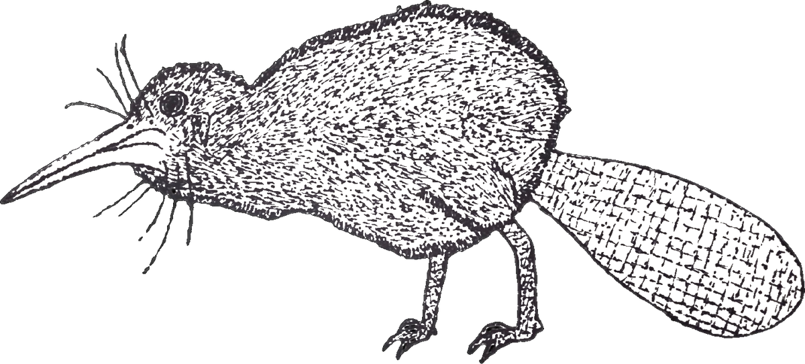

Kaitiaki Hamon
Ron Hairemy
Kaitiaki Hamon’s Look At Weather And The World
One Well at a Time
Blog #3 — One Well at a Time — Monday, October 12, 2026
Message those you love. And be sure to tell them that… You don't know when it will be the last time you will. 🦃❤️
🙏 A quick note before we ride, whānau — this blog was meant to be up on Monday and it's running late. I was too busy being a dad, soaking up my time with Leia-Lorena, and the post had to wait its turn. Sorry for the delay… family first, always. 💛
🌤️ Intro
Hey crew, Kaitiaki Hamon here 🌳🚜 — it's Thanksgiving Monday, and at 11 this morning I get to spend the afternoon with my Princess Leia-Lorena, the visit I've been counting down to all week 🦃❤️. The MANAIA canvas is sitting north of 53 hours now, and every night the dots pull me a little deeper into the rebirth of it 🖌️✨. On Friday, while searching myself on Google to check the functionality of my website (kaitiakihamon.com), I stumbled into more extended family of mine who delves into the art world, Francis Hamon (named after Rei Paul Francis Hamon, his grandfather). The Hamon art whānau is getting closer, and my heart's full 🧡. Inside today's blog: the 5 Things Most Pro Landscapers Won't Tell You, plus the Deep Dive on all five 🛠️. There's Today's Message, Today's Weather, the Star Wars galaxy forecast, the Daily Landscaping LOL, and Ron Hairemy's Songs That Guarantee LAWNgevity 🎶. Let's ride. 🚀
🛠️ 5 Things Most Pro Landscapers Won't Tell You
- 🌿🛠️ Loosen or cut off this year's nursery staking before winter
- 🌿🛠️ Seal your pavers and stone this week — it's the last warm window
- 🌿🛠️ Service the snowblower NOW, not the morning it snows
- 🌿🛠️ Run plywood planks when the wheelbarrow crosses October lawns
- 🌿🛠️ Map your bulbs and perennials before the snow hides them
👇 Continue reading to learn more — the full breakdown on all five is waiting for you after the joke.
🌟 Today's Message: One Well at a Time
Let me tell you about a kid from Kemptville, Ontario 🇨🇦 — Ryan Hreljac, born May 31, 1991, which makes him exactly one month older than me 👶📅. January 1998, Grade One: his teacher tells the class about the global water crisis — children in Africa walking kilometres every single day just to fetch water, the most basic thing on earth 💧🌍. Ryan goes home that night, asks his parents for $70 — what he figures a well must cost — and spends the next four months earning it doing extra chores 🧹💪. Four months of a six-year-old's allowance hustle, for people he'd never met.
Then he drops the $70 at the charity and gets the gut-punch: $70 doesn't buy a well — it buys a hand pump. A real well costs $2,000 😳💸. Most six-year-olds would've folded right there. Ryan just said, "I'll just do more chores" 🗣️💥. He starts speaking anywhere that'll listen — schools, churches, service clubs — a little kid with a microphone and a mission 🎤. He gets a pen pal at Angolo Primary School in northern Uganda — Jimmy Akana, who wakes up at midnight to walk 8 kilometres for water and still gets to school on time 🌙🚶. And in January 1999, the first well is drilled at Angolo — Ryan's seven years old, and his pen pal's village has clean water 💧🎉.
That's where most stories end. This one was just starting 🌱. In 2001, the Ryan's Well Foundation is born 🏛️ — and it keeps growing: speaking tours in 40+ countries, supporters like Matt Damon, Oprah Winfrey, Jane Goodall, and Prince Charles 🌍✨. The Hreljac family even adopts Jimmy — he becomes a Canadian citizen in 2007 🇨🇦❤️. Fall 2015: the 1,000th well goes in. By June 2023: 1,767 water and 1,322 sanitation projects, clean water for over 1.5 million people across 17 countries 📊💧. Along the way: the World of Children Award, the Order of Ontario, the Meritorious Service Medal 🎖️. All of it — every single drop — from a kid who wouldn't take "that costs too much" for an answer.
So here I am on Thanksgiving Monday, turkey on the horizon, clean water coming out of a tap I'll never have to think about 🚰🦃 — and Ryan's story is the one I want sitting next to the cranberry sauce. He didn't wait until he was big enough, rich enough, or old enough. He started with chores and a $70 misunderstanding and turned it into water for a million and a half people 💪💧. Whatever your $70 is — the small, slightly-naive thing you could start today — start it. You don't need permission, you need a first step.
Forward is always a choice, and that means YOU too! 💛🚀
Sources: Ryan's Well Foundation · World of Children — Ryan Hreljac · Kickass Canadians — Ryan Hreljac · MN2S — Ryan Hreljac milestones · Ryan Hreljac biography
❄️🚀☀️😎 Today's Weather
Edmonton, Alberta 🇨🇦
High 8°C (feels like -5°C), low near 0°C. Partly cloudy this morning giving way to a sunny afternoon, south wind at 17 km/h gusting to 30, rain 0%, humidity 60–90%. Morning starts at -1°C — frosty noses at the bus stop.
Scale of the Pantaloon: Level 5 — Time to Break Out the Sweatpants 🌤️🙂
A frosty-nosed start that turns into a golden October afternoon 🍂. Don't roll heavy loads across frosty grass first thing — the afternoon is made for outdoor jobs, and it's a beauty.
Aotearoa — Auckland, NZ 🇳🇿
High 20°C (feels like 15°C), low near 15°C. AM light rain at 50% (about 0.5mm), cloudy, humidity 95% easing to 82%, wind WNW at 24 km/h.
Scale of the Pantaloon: Level 7 — Bust Out the Booty Shorts, Baby! 🔥🩳
Classic spring day doing its spring thing 🌧️🌤️ — morning rain, afternoon clear. Plan the indoor mahi for the morning and hit the yard when it lifts.
📅 Next 5 Days — Edmonton – Aeoteroa
Tuesday, October 13
🇨🇦 Edmonton: High 13°C (feels like -1°C), low near 3°C. Partly cloudy, 10% rain, wind west at 9 km/h, humidity 63%. Pantaloon: Level 6 — Don't Judge If You See Me in Some Tacky Khakis ☀️😎. Thirteen degrees in mid-October is a straight-up gift — take it without asking questions.
🇳🇿 Aotearoa: High 20°C (feels like 15°C), low near 15°C. AM light rain at 50% (0.5mm), wind WNW at 24 km/h. Pantaloon: Level 7 — Bust Out the Booty Shorts, Baby! 🔥🩳. Damp start, twenty-degree finish — no complaints.
Wednesday, October 14
🇨🇦 Edmonton: High 15°C (feels like 3°C), low near -1°C. AM clouds giving way to PM sun, 20% rain, wind west at 31 km/h, humidity 57%. Pantaloon: Level 7 — Bust Out the Booty Shorts, Baby! 🔥🩳. Hold onto your hat — those 31 km/h gusts mean business 🤠.
🇳🇿 Aotearoa: High 22°C (feels like 15°C), low near 15°C. AM clouds/PM sun, 20% rain, wind NW at 20 km/h. Pantaloon: Level 7 — Bust Out the Booty Shorts, Baby! 🔥🩳. Twenty-two and breezy — spring showing off.
Thursday, October 15
🇨🇦 Edmonton: High 11°C (feels like -2°C), low near 2°C. Mostly sunny, 10% rain, wind south at 14 km/h, humidity 59%. Pantaloon: Level 6 — Don't Judge If You See Me in Some Tacky Khakis ☀️😎. Calm, bright, crisp — a working day with your name on it.
🇳🇿 Aotearoa: High 17°C (feels like 12°C), low near 10°C. Rain at 100% (about 10.5mm), wind west at 28 km/h, humidity 86%. Pantaloon: Level 7 — Bust Out the Booty Shorts, Baby! 🔥🩳. Booty shorts WITH a rain jacket — ten millimetres says stay dry ☔.
Friday, October 16
🇨🇦 Edmonton: High 16°C (feels like -1°C), low near 5°C. Partly cloudy, 0% rain, wind south at 9 km/h, humidity 57%. Pantaloon: Level 7 — Bust Out the Booty Shorts, Baby! 🔥🩳. Sixteen degrees and bone dry in mid-October — I don't make the rules, I just enjoy them.
🇳🇿 Aotearoa: High 16°C (feels like 8°C), low near 7°C. Partly cloudy, 20% rain, wind SSW at 31 km/h, humidity 66%. Pantaloon: Level 7 — Bust Out the Booty Shorts, Baby! 🔥🩳. Cooler, windier — the shorts stay, the attitude adjusts.
Saturday, October 17
🇨🇦 Edmonton: High 16°C (feels like 4°C), low near 4°C. Partly cloudy, 10% rain, wind west at 17 km/h, humidity 50%. Pantaloon: Level 7 — Bust Out the Booty Shorts, Baby! 🔥🩳. Saturday looks like a second helping of Friday — get outside and stay there.
🇳🇿 Aotearoa: High 16°C (feels like 5°C), low near 9°C. Mostly sunny, 0% rain, wind south at 23 km/h, humidity 57%. Pantaloon: Level 7 — Bust Out the Booty Shorts, Baby! 🔥🩳. Sunny and dry — a perfect spring Saturday on both sides of the Pacific.
✨🚀 What That Means In A Galaxy Far Far Away
The week opens on Ord Mantell 🏭🌤️ — the junkyard world, where mild 13° breezes drift over the scrap-fields and the salvagers work honest hours under honest skies. Wednesday we brave Trandosha 🌪️🌴 — the wind screams through the jungle canopy at 31 km/h and only the stubborn (or the well-anchored) go outside. Thursday breaks crisp and clear above the spires of Denon 🏙️☀️ — eleven degrees of clean, bright, get-things-done air. Friday the route swings past Malastare 🏁🔥 — podracing-season warmth, dry and 16°, engines loud and skies clear. Saturday we drift through Raxus 🌫️🌧️ — ash-grey skies and a late drizzle over the ruins, nothing to fear, everything to watch. Sunday the winds whistle through the sinkholes of Utapau 🕳️💨 — twelve degrees of echoing, hollow, beautiful weather. And the week closes on Socorro 🏜️🌙 — the desert world cooling to 10° under a clearing sky, where you grab a coat at dusk and thank the stars for a dry day. Wind, sun, drizzle, calm — pack everything, trust nothing 🧥🩳🚀.
🤣😅😄 The Daily Landscaping LOL
A science teacher brings four worms to class and drops them into four jars 🐛🧪 — jar one: water, jar two: soda, jar three: beer, jar four: whiskey 🥃. By the end of class, the worms in the water, soda, and beer are all alive and wiggling… but the one in the whiskey is stone dead ☠️
"So class," the teacher asks, "what did we learn today?"
Little Johnny raises his hand:
"If you drink whiskey, you won't get worms." 😂🐛🥃
🛠️🌿 The Deep Dive: 5 Things Most Pro Landscapers Won't Tell You
1. Loosen or cut off this year's nursery staking before winter. Trees staked at planting time with tight ties need to come free before their first winter — a trunk that can't flex in the wind never builds taper, so it stays a skinny pole that snaps the first year it's on its own. Worse, tight ties freeze into the bark over winter and girdle it. If the tree still wobbles, re-stake it lower — about a third of the way up — with loose figure-8 ties that let it sway a couple of inches. Freedom builds strength; so does the trunk.
2. Seal your pavers and stone this week — it's the last warm window. Look at the forecast: Tuesday through Saturday, highs of 13 to 16°C and basically zero rain. Water-based sealers need about 10°C and 48 dry hours to cure — this stretch is very likely the last one that qualifies before winter. A sealed surface shrugs off freeze-thaw spalling and the white salt bloom that eats concrete pavers for breakfast. One afternoon rolling sealer now is a patio that doesn't crumble by April.
3. Service the snowblower NOW, not the morning it snows. Fresh oil, new shear pins, check the auger belts for cracking, and look at the scraper bar — if it's worn down, the housing rides straight on the pavement and eats itself alive. Every small-engine shop in Edmonton is buried the week of the first real dump; do it today and you're the genius sipping coffee while the neighbours stand in line. Twenty minutes now saves a January panic.
4. Run plywood planks when the wheelbarrow crosses October lawns. October turf is soft — freeze-thaw cycles loosen the soil profile, and a loaded wheelbarrow cuts ruts straight into it. Those ruts don't just look bad; they compact the soil into brown lines that show up all spring. Two scrap sheets of plywood laid as a runway and you float right over. Cheap, ugly, and smarter than a spring of explaining ruts to a client.
5. Map your bulbs and perennials before the snow hides them. Once the tops die back and the snow flies, your garden beds become a memory test — and spring-you never wins. Snap a phone photo of each bed now and jot the bulb spots right on it, or push a few marker flags in before the ground freezes. Come April, when you're dividing or digging, you'll be placing clean cuts instead of playing bulb roulette.
🎶 Ron Hairemy's Songs That Guarantee LAWNgevity
🇨🇦 Canadian Track'O'The Day: Save Your Scissors — City and Colour 🎸🍁
Explicit? No — clean.
Dallas Green — the voice and guitar of Alexisonfire — stripping everything back to just an acoustic and that aching tenor, from his 2005 debut Sometimes, the record that took this side project to platinum in Canada and him to multiple Juno Awards 🏆. It's a quiet, heavy-hearted track about trying to talk someone you love out of hurting themselves — the kind of song that sits with you long after it ends. For me, it's a Monday-morning song: coffee in hand, windows fogged, thinking about the people I'd cross the province for ☕❤️.
🤣 Today's Musical Funny-Bone: The Last Saskatchewan Pirate — Captain Tractor 🏴☠️🌾
Explicit? No — clean.
Edmonton's own Celtic-rock crew takes the Arrogant Worms' prairie-pirate shanty and gives it the full fiddle-and-stomp treatment 🎻⚓. A Saskatchewan farmer hangs up the plow, steals wheat and barley, and sails the wheat fields of the prairies — it's ridiculous, it's catchy, and it slaps harder than it has any right to. This one's the spiritual cousin of my childhood Weird Al rotation, so you know it's earned its slot 😈. Best listened to rolling to the job site with the crew in the truck 🚜🎶.
🤘 Hair Whippin', Head Bangin', Finger Blazin' Therapy: Eye of Chaos — Once Human ⚔️🔥
Explicit? No profanity — just fury.
LA groove-metal built around Logan Mader's riffs (ex-Machine Head, Soulfly) and Lauren Hart's ferocious vocals — Eye of Chaos is pure head-down riff therapy, all muscle and zero fat 💪🎸. No explicit tag on this one, so it hits as hard as it wants without saying a word your nana would faint at. Best listened to Monday morning, full volume, resetting the whole week one breakdown at a time 🤘.
🎤 Tongue Trippin', Bar Spittin, Beat Killin Bars: Stan — Eminem ✉️🌧️
Explicit? Yes — profanity and heavy themes (obsession, implied violence, drunk driving). Not a family-dinner song.
From The Marshall Mathers LP (2000) — the Dido-sampling letter from a fan gone way too far, a storytelling masterclass so powerful the word "stan" ended up in the dictionary 📖🔥. One of the most acclaimed narrative tracks in hip-hop history, and it still hits like a brick through a window twenty-six years later. For me, this is headphones-on, full-attention listening — and maybe not at the Thanksgiving table today 🦃🎧.
🇳🇿 Māori Track'O'The Day: Te Rā — Alien Weaponry 🌋🎶
Explicit? The featured track is clean — note the album also carries a couple of explicit tracks.
The Māori thrash-metal trio from Waipu, Aotearoa — brothers Henry and Lewis de Jong with Tūranga Porowini Morgan-Edmonds — carrying te reo Māori into the heaviest music on earth 🤘🇳🇿. Te Rā ("The Sun") is their 2025 third full-length — I'm putting you onto the opener Crown, and don't sleep on Taniwha featuring Randy Blythe of Lamb of God either 🐉. A Māori band making the language roar — that's the whakapapa of volume, and it runs straight through me.
🚨 Ron Hairemy Spotlight: Money Buy Drugs (Interlude) — Cal Scrubby 💊💸
Explicit? Yes — drug and addiction themes, profanity. Heavy.
Cal Scrubby — Lebanon, Ohio MC who started making noise at Ohio State, signed with Riveting Entertainment in 2014, and charted on Billboard with his House in the Hills EP, with Chris Brown and Redman collabs in the catalogue 🎤. This interlude doesn't blink: addiction, the plug, the spiral, laid out brutally honest — and I won't pretend it doesn't sit close to home for me, because that's exactly why it's here 🕯️. Sometimes the ugly truth does more work than the pretty lie. Best listened to when you need reminding what the fight is for.
That's the goal. That's LAWNgevity. 🌱🔥
🌟 In Conclusion
A six-year-old from Kemptville turned $70 of chores into clean water for a million and a half people 💧🇨🇦 — so this Thanksgiving, I'm grateful for the work my hands get to do and the water that falls from my sky for free 🌧️🦃. Seal those pavers this week while the teens hold, service the blower before it buries you, and text the person you're thankful for before the turkey's even cold 📲❤️. Happy Thanksgiving, whānau — eat too much, hug everybody twice, and I'll see you tomorrow morning. So until tomorrow, this is Ron Hairemy signing off saying: Keep your stick on the ice... and may the Force be with you. Always!
Sincerely,
Kaitiaki Hamon (Ron Hairemy)
❄️🌟💪🚀❤️✨🌌